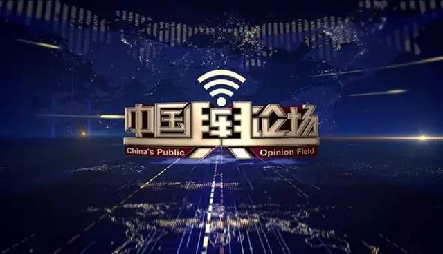
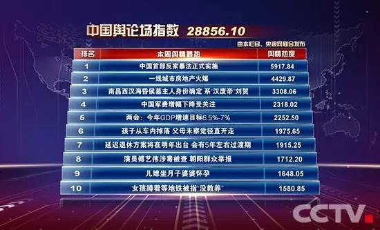
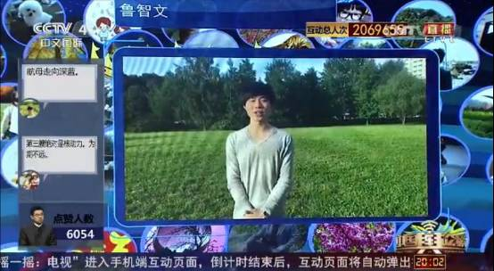

拿奖到手软的《中国舆论场》到底是怎样一档节目？
2017-03-25
来源：央视广告经营管理中心
《中国舆论场》是一档直播类多屏实时互动的新闻评论节目，是中文国际频道2016年力推并重点打造的创新节目，也是央视对融媒体模式的一次全新探索和尝试。
开播以来，《中国舆论场》所获好评不断。来看看它的获奖情况：
荣获2016年CCTV年度大奖
荣获2016年CCTV品牌创新奖
荣获2016年CCTV年度优秀特别节目一等奖
荣获2016年CCTV年度新媒体优秀作品奖一等奖
荣获2016年第二季度国家新闻出版广电总局广播电视创新创优节目
荣获2016“TV地标(2016)”中国电视媒体综合实力大型调研成果“年度上星频道最具品牌影响力节目”奖
如此受欢迎，《中国舆论场》到底好在哪里？
融媒体互动，破解网络舆论迷雾
《中国舆论场》深入探讨人们关注的新事、大事、身边事，与央视网联合推出“中国舆论场指数”，实时关注全网新闻的热点舆情，盘点每日每周舆情最热TOP10话题，并通过融媒体的模式带动全民参与话题讨论，用观点的碰撞和交流激发社会思考，致力于搭建沟通平台，激浊扬清、针砭时弊，澄清谬误。
节目将电视、互联网、移动新媒体深度结合，创造性地引入“在线观众席”，全球网友可以通过手机进行实时抢票，成为当期节目现场参与者，直接分享观点，向嘉宾提问，全程互动。这种融媒体的即时传播与互动方式，既增强节目的趣味性和新鲜感，也让一向“高冷”的新闻评论类节目更加亲民、更接地气。
截至2017年3月24日，《中国舆论场》共播出49期节目，平均收视率为1.05%，平均收视份额3.32%。其中有33期收视在1%以上，最高收视为1.71%，最高收视份额为5.06%。在同时段节目中遥遥领先。
互动人数不断增加，海外影响力不断扩大
《中国舆论场》单期最高互动人数90多万人，直播期间，节目在酷云关注度稳居全国同时段前两位。单期最高互动人数为90多万，互动总人次为9900多万次。互动范围不断扩大，遍布120多个国家和地区。
截至3月中下旬，《中国舆论场》微信公众号总关注人数达282万多人，Facebook平台《中国舆论场》相关内容累计总浏览量达到4035万次，累计独立浏览用户达到2687.5万人，累计点赞、评论、分享等总互动量达到215.3万次，累计视频观看次数达到bounceInLeft